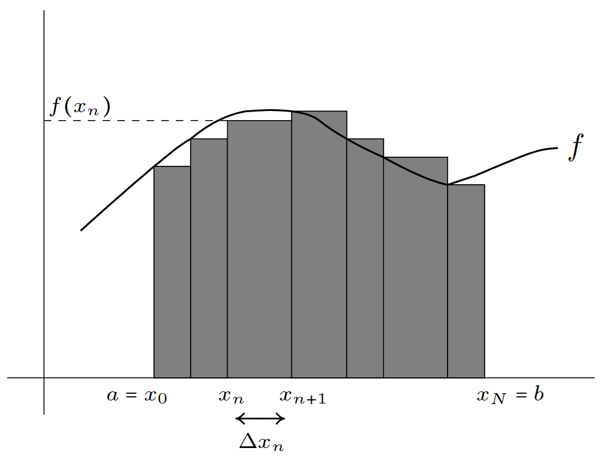

13 Integrals
13.1 Antiderivatives and indefinite integrals
Reference: Hase (2022)
The derivative \(f'\) of a function \(f : \mathbb{R} \to \mathbb{R}\) is defined by the formula
\[ f'(x) = \lim \limits_{\Delta x \to 0} = \cfrac{f(x + \Delta x) - f(x)}{\Delta x} \]
Now, a different question can be proposed: given \(f\), one may be interested in a function \(F\) such that
\[ F'(x) = f(x) \]
for all \(x\) in the domain of \(f\). This is an inverse problem of derivation, and \(F\) is called an antiderivative of \(f\). One may immediately note that the antiderivative of a function is not unique; for instance, if \(f(x) = x\), then \(\cfrac{x^{2}}{2}\), \(\cfrac{x^{2}}{2} − 1\) and \(\cfrac{x^{2}}{2} + \pi\) are some possible antiderivatives. However, as these examples indicate, the difference between any two antiderivatives of a given function is a constant. This means that if \(F\) is an antiderivative of \(f\), any other antiderivative of \(f\) can be expressed by \(F + c\), where \(c \in \mathbb{R}\) is a constant.
If \(F(x)\) is an antiderivative of \(f(x)\) for \(x \in (a, b) \subset \mathbb{R}\), the family of functions \(\{F + c\}\), where \(c \in \mathbb{R}\) is a constant, is the indefinite integral of \(f\), and is denoted by
\[ \int f(x) \ dx \]
id est,
\[ \int f(x) \ \mathrm{d} x = F(x) + c, \quad c \in \mathbb{R}, \quad \text{if} \quad F'(x) = f(x) \]
In \(\displaystyle \int f(x) \ dx\), \(f(x)\) is the integrand and the symbol \(dx\) (the measure of integration) will play an important role later. Some remarks:
From the definition, \(\displaystyle \cfrac{\mathrm{d}}{\mathrm{d} x} \int f(x) \ \mathrm{d} x = f(x)\).
Geometrically, an indefinite integral is a family of curves, each one of them being related to others by a “vertical” translation.
Not every function has an indefinite integral; furthermore, not every function has an indefinite integral that can be expressed by a finite combination of elementary functions.
Indefinite integrals are also defined for linear combinations of functions. As a consequence of linearity in derivatives, the following linear properties hold:
- \(\displaystyle \int [f(x) + f(x)] \ \mathrm{d} x = \int f(x) \ \mathrm{d} x + \int g(x) \ \mathrm{d} x\)
- \(\displaystyle \int \alpha f(x) \ \mathrm{d} x = \alpha \int f(x) \ \mathrm{d} x \quad (\alpha \in \mathbb{R})\)
To see the properties above, one should derive both sides of each identity and see that the results match. The identities should be understood in the sense that indefinite integrals are equivalent up to a constant. In particular, it follows that
\[ 0 \cdot \int f(x) \ \mathrm{d} x = \int 0 \cdot f(x) \ \mathrm{d} x = \int 0 \ \mathrm{d} x = c \quad (c \in \mathbb{R}) \]
and
\[ \int f(x) \ \mathrm{d} x - \int f(x) \ \mathrm{d} x = \int [f(x) - f(x)] \ \mathrm{d} x = \int 0 \ \mathrm{d} x = c \quad (c \in \mathbb{R}) \]
These two examples remind one that indefinite integrals are a family of functions, and not simple functions.
13.2 Indefinite integrals of elementary functions
Reference: Hase (2022) and Morettin, Hazzan, and Oliveira Bussab (2003)
For all \(c \in \mathbb{R}\):
\(\displaystyle \int \cos x \ \mathrm{d} x = \sin x + c \quad , \quad \text{since} \ \ \cfrac{\mathrm{d}}{\mathrm{d} x} \sin x = \cos x\)
\(\displaystyle \int \sin x \ \mathrm{d} x = - \cos x + c \quad , \quad \text{since} \ \ \cfrac{\mathrm{d}}{\mathrm{d} x} ( - \cos x) = \sin x\)
\(\displaystyle \int \sec^{2} x \ \mathrm{d} x = \tan x + c \quad , \quad \text{since} \ \ \cfrac{\mathrm{d}}{\mathrm{d} x} \tan x = \sec^{2} x\)
\(\displaystyle \int e^{2} \ \mathrm{d} x = e^{2} + c \quad , \quad \text{since} \ \ \cfrac{\mathrm{d}}{\mathrm{d} x} e^{2} = e^{2}\)
\(\displaystyle \int \alpha x^{\alpha - 1} \ \mathrm{d} x = x^{\alpha} + c \quad , \quad \text{since} \ \ \cfrac{\mathrm{d}}{\mathrm{d} x} x^{\alpha} = \alpha x^{\alpha - 1}\)
- \(\displaystyle \int x^{\alpha} \ \mathrm{d} x = \cfrac {x^{\alpha + 1}} {\alpha + 1} + c \quad (\alpha \neq -1)\)
\(\displaystyle \int \cfrac{1}{x} \ \mathrm{d} x = \ln |x| + c \quad , \quad \text{since} \ \ \cfrac{\mathrm{d}}{\mathrm{d} x} \ln |x| = \cfrac{1}{x}\)
13.3 (Riemann) Integral - Definition
Reference: Hase (2022)
Let \(f : \mathbb{R} \to \mathbb{R}\) be a continuous function. Considering an interval \([a, b] \subset \mathbb{R}\), it is possible to choose a partition given by \(a = x_{0} < x_{1} < \cdots < x_{N - 1} < x_{N} = b\) (figure 1) from which one can define the sum
\[ \sum \limits^{N}_{n = 1} f(x_{n}) \Delta x_{n} \quad \text{where} \quad \Delta x_{n} := x_{n} - x_{n - 1} \]
Note that if \(f \geq 0\) in \([a, b]\), this sum approaches the area between \(f\) and the \(x\) axis when
\(\text{(a)}\) The size of each division is diminished.
\(\text{(b)}\) The number of divisions inside the partition is increased.

It should be clear that \(\text{(a)}\) implies \(\text{(b)}\), but the converse is false. The limit of such sum is the (Riemann) integral of \(f\) in the interval \([a, b]\), and is denoted by
\[ \int^{b}_{a} f(x) \ \mathrm{d} x := \lim \limits_{\text{max}_{n} \ \Delta x_{n} \to 0} \sum \limits^{N}_{n = 1} f(x_{n}) \Delta x_{n} \]
The interpretation of the formula above as being the area becomes clearer if the quantity \(\displaystyle \int^{b}_{a} f(x) \ \mathrm{d} x\) is understood as \(\displaystyle \int^{b}_{a} [f(x) - 0] \ \mathrm{d} x\). Hence, if \(f \leq 0\) at \([a, b]\), \(\displaystyle \int^{b}_{a} f(x) \ \mathrm{d} x\) would be the “opposite of the area”. The continuity condition of \(f\) can be relaxed to piecewise continuity.
Two properties of the definite integral are assumed by definition:
\[ \int^{b}_{a} f(x) \ \mathrm{d} x = - \int^{a}_{b} f(x) \ \mathrm{d} x \tag{i} \]
\[ \int^{a}_{a} f(x) \ \mathrm{d} x = 0 \tag{ii} \]
13.4 General formulas
Reference: Hass, Heil, and Weir (2018)
Zero: \(\displaystyle \int^{a}_{b} f(x) \ \mathrm{d} x = 0\)
Order of integration: \(\displaystyle \int^{a}_{b} f(x) \ \mathrm{d} x = - \int^{b}_{a} f(x) \ \mathrm{d} x\)
Constant multiples:
- \(\displaystyle \int^{b}_{a} k f(x) \ \mathrm{d} x = k \int^{b}_{a} f(x) \ \mathrm{d} x, \quad k \in \mathbb{R}\)
- \(\displaystyle \int^{b}_{a} - f(x) \ \mathrm{d} x = - \int^{b}_{a} f(x) \ \mathrm{d} x, \quad k = -1\)
Sum: \(\displaystyle \int^{b}_{a} [(f(x) + g(x)] \ \mathrm{d} x = \int^{b}_{a} f(x) \ \mathrm{d} x + \int^{b}_{a} g(x) \ \mathrm{d} x\)
Difference: \(\displaystyle \int^{b}_{a} [(f(x) - g(x)] \ \mathrm{d} x = \int^{b}_{a} f(x) \ \mathrm{d} x - \int^{b}_{a} g(x) \ \mathrm{d} x\)
Additivity: \(\displaystyle \int^{b}_{a} f(x) \ \mathrm{d} x + \int \limits^{c}_{b} f(x) \ \mathrm{d} x = \int \limits^{c}_{a} f(x) \ \mathrm{d} x\)
Max-min inequality: If max \(f\) and min \(f\) are the maximum and minimum values of \(f\) on \([a, b]\), then
\[ \text{min} \ f \cdot (b - a) \leq \int^{b}_{a} f(x) \ \mathrm{d} x \leq \text{max} \ f \cdot (b - a) \]
Domination:
- \(\displaystyle f(x) \geq g(x) \quad \text{on} \quad [a, b] \quad \text{implies} \quad \int^{b}_{a} f(x) \ \mathrm{d} x \geq \int^{b}_{a} g(x) \ \mathrm{d} x\)
- \(\displaystyle f(x) \geq 0 \quad \text{on} \quad [a, b] \quad \text{implies} \quad \int^{b}_{a} f(x) \ \mathrm{d} x \geq 0\)
13.5 Other properties
Reference: Hass, Heil, and Weir (2018)
- Substitution in definite Integrals: \(\displaystyle \int^{a}_{b} f(g(x)) \cdot g'(x) \ \mathrm{d} x = \int^{g(b)}_{g(a)} f(u) \ \mathrm{d} u\)
- Integration by Parts: \(\displaystyle \int^{b}_{a} u(x) v'(x) \ \mathrm{d} x = u(x) v(x) \biggr ]^{b}_{a} -\int^{b}_{a} v(x) u'(x) \ \mathrm{d} x\)
13.5.1 (Riemann) Integral - Fundamental theorem of calculus
Reference: Hase (2022)
This section establishes a connection between the integral of a function and its derivative. Concretely, this connection allows one to evaluate some integrals in terms of some known functions.
Let \(f\) be continuous in \(\mathbb{R}\) (for simplicity) and consider the function
\[ F(x) := \int^{x}_{a} f(\xi) \ \mathrm{d} \xi \tag{iii} \]
which represents the integral of \(f\) from point \(a\) (fixed) to another point \(x\) (variable). Then, from the properties shown in the section above, it follow that
\[ \cfrac{F(x + \Delta x) - F(x)}{\Delta x} = \cfrac{1}{\Delta x} \left [ \int^{x + \Delta x}_{a} f(\xi) \ \mathrm{d} \xi - \int^{x}_{a} f(\xi) \ \mathrm{d} \xi \right ] = \cfrac{1}{\Delta x} \int^{x + \Delta x}_{x} f(\xi) \ \mathrm{d} \xi \]
The integral in above is evaluated in the interval \([x, x + \Delta x)\); if the value of \(\Delta x \ (> 0)\) is decreased, one has
\(f(\xi) \approx f(x)\) for \(\xi \in [x, x + \Delta x)\), since \(f\) is continuous. Therefore,
\[ \cfrac{\mathrm{d}}{\mathrm{d} x} F(x) = \lim \limits_{\Delta x \to 0} \cfrac{F(x + \Delta x) - F(x)}{\Delta x} = \lim \limits_{\Delta x \to 0} \cfrac{1}{\Delta x} \int^{x + \Delta x}_{a} \underbrace{f(\xi)}_{\simeq f(x)} \ \mathrm{d} \xi = \]
\[ = \lim \limits_{\Delta x \to 0} \cfrac{1}{\Delta x} f(x) \int^{x + \Delta x}_{a} \mathrm{d} x = f(x) \]
remembering that the integral (in the variable \(\xi\)) does not act over \(f(x)\), which is considered to be “constant”; moreover, \(\displaystyle \int^{x + \Delta x}_{a} \mathrm{d} \xi = \int^{x + \Delta x}_{a} 1 \ \mathrm{d} \xi\) is the area of the rectangle defined between the constant function \(1\) and the \(x\)-axis in the interval \(\xi \in [x, x + \Delta x)\). As a consequence, one has
\[ \cfrac{\mathrm{d}}{\mathrm{d} x} \int^{x}_{a} f(\xi) \ \mathrm{d} \xi = f(x) \tag{iv} \]
Note that this result does not depend on the choice of \(a\).
Suppose, now, that there is a function \(g\) such that \(f = g'\). This means that both \(F\) and \(g\) are antiderivatives of \(f\). From \(\text{(iii)}\) and \(\text{(iv)}\), one has \(F' = f = g'\) and, from the linearity of derivatives, \((F − g)' = 0\). Hence, the function \(F − g\) should equal a constant, \(c \in \mathbb{R}\), from which
\[ F(x) = g(x) + c \quad (x \in \mathbb{R}) \]
Since \(F(a) = 0\) by \(\text{(iii)}\), it is straightforward that \(c = − g(a)\); then, \(F(x) = g(x) − g(a)\) by the formula above. Finally, by choosing \(x = b\) in \(\text{(iii)}\), which implies \(F(b) = g(b) − b(a)\), one has
\[ \int^{b}_{a} f(x) \ \mathrm{d} x = g(b) - g(a), \quad \text{where} \quad f = g' \]
This is the definite integral, which is a “number”(indefinite integrals are families of functions). To evaluate the integral of \(f\) from \(a\) to \(b\), it is necessary, then, to find a function \(g\) whose derivative is \(f\) and compute the difference \(g(b) − g(a)\). Finally, one also has
\[ \int^{b}_{a} \left [ \cfrac{\mathrm{d}}{\mathrm{d} x} f(x) \right ] \ \mathrm{d} x = \int^{b}_{a} f'(x) \ \mathrm{d} x = f(b) - f(a) \]
since \(f\) is a function whose derivative is \(f'\).
Example: \(\displaystyle \int^{\pi}_{0} \sin x \ \mathrm{d} x\)
Firstly,
\[ \int^{\pi}_{0} \sin x \ \mathrm{d} x = F(\pi) - F(0) \]
where \(F\) is such that \(F' = f\). Therefore, taking \(F(x) = − \cos x\) is a possibility (actually \(\cos x + c\), \(c \in \mathbb{R}\), also works, but the constant \(c\) plays no role, since it cancels out in the difference \(F(\pi) - F(0)\)); as a consequence,
\[ \int^{\pi}_{0} \sin x \ \mathrm{d} x = [- \cos \pi] - [- \cos 0] = 2 \]
Example: \(\displaystyle \int^{3}_{1} \left ( \cfrac{x^{3} - x}{x} \right ) \ \mathrm{d} x\)
Since \(\cfrac{x^{3} - x}{x} = \cfrac{x^{3}}{x} - \cfrac{x}{x} = x^{2} - 1\) (for \(x \neq 0\)), then,
\[ \int^{3}_{1} \left ( \cfrac{x^{3} - x}{x} \right ) \ \mathrm{d} x = \int^{3}_{1} x^{2} \ \mathrm{d} x - \int^{3}_{1} 1 \ \mathrm{d} x = \]
\[ = \biggr [ \underbrace{\cfrac{x^{3}}{3}}_{\text{antiderivative of} \ x^{2}} \biggr ]^{3}_{1} - \biggr [ \underbrace{x}_{\text{antiderivative of} \ 1} \biggr ]^{3}_{1} = \biggr [ \cfrac{3^{3}}{3} - \cfrac{1^{3}}{3} \biggr ] - \biggr [ 3 - 1 \biggr ] = \cfrac{20}{3} \]